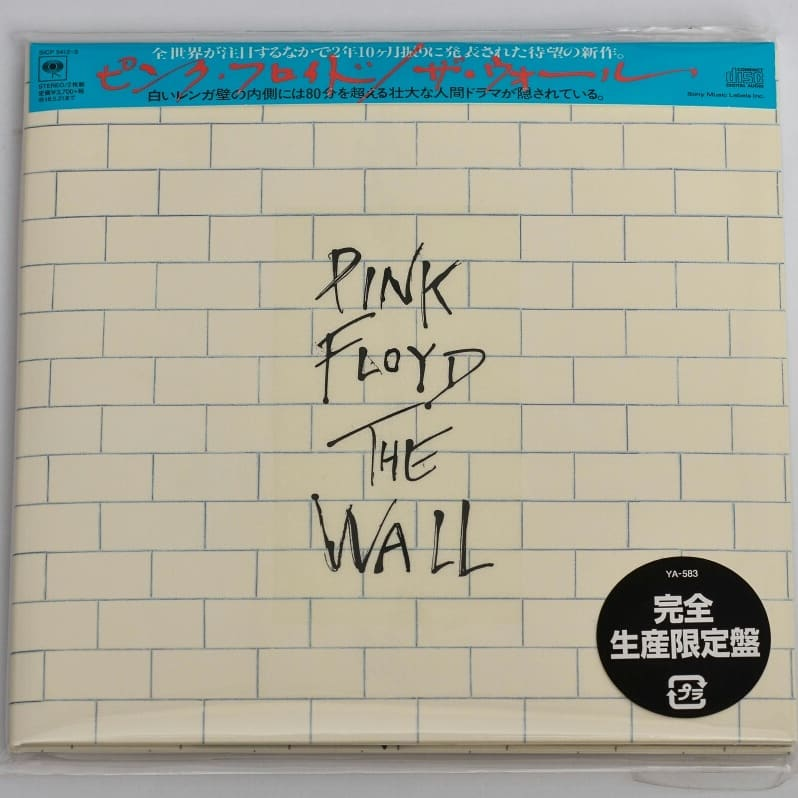

Pink Floyd / The Wall Japan Mini LP 2CD Limited Release 🔝 - 2600 рублей
100% ORIGINAL JAPAN RELEASE MINI LP 2CD
Catalog No. SICP-5412
JAN/ISBN: 4547366312607
Product Type CD
Number of Discs 2
Tracklisting
CD 1
1.In The Flesh?
2.The Thin Ice
3.Another Brick In The Wall（part I）
4.The Happiest Days Of Our Lives
Another Brick In The Wall（part II）
5.Mother
6.Goodbye Blue Sky
7.Empty Spaces
8.Young Lust
9.One Of My Turns
10.Don't Leave Me Now
11.Another Brick In The Wall（part III）
12.Goodbye Cruel World
CD 2
1.Hey You
2.Is There Anybody Out There?
3.Nobody Home
4.Vera
5.Bring The Boys Back Home
6.Comfortably Numb
7.The Show Must Go On
8.In The Flesh
9.Run Like Hell
10.Wating For The Worms
11.Stop
12.The Trial
13.Outside The Wall
Cardboard sleeve reissue release from Pink Floyd features 2011 remastering. The mini LP faithfully replicates its original UK LP design. Includes an obi faithfully replicating the one with its Japan first pressing edition. Comes with lyrics and a description.